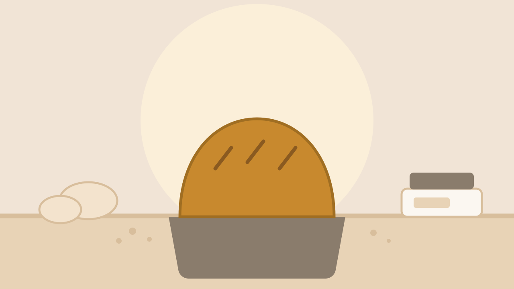

日式生吐司・從麵團到出爐
生吐司之所以「生」，不是因為沒烤熟，而是因為含水量高、組織細，撕開時會拉出一層一層的薄膜，不烤也好吃。這堂課會帶你完整做完一條，從秤粉開始，不使用預拌粉。
這是一堂設計給沒有烘焙經驗的人的課。攪拌機的操作、麵團該揉到什麼程度、發酵好了長什麼樣子，老師都會先示範一次，再讓你自己動手做一次。課程結束時，你會帶走一條 12 兩的生吐司，以及一份可以在家重做的完整配方。
這堂課你會做出什麼
01
12 兩日式生吐司 ×1
使用湯種法，含水量 75%,冷卻後裝盒帶回。
02
小奶油餐包 ×4
用同一份麵團分割整形，當天就可以吃。
03
可在家重做的配方卡
含家用烤箱的溫度換算與失敗排查表。
課程內容
- 01 認識材料與湯種製作高筋麵粉、酵母、糖鹽的作用，現場煮一鍋湯種 30 分
- 02 攪拌與判斷麵團狀態從捲起到完全擴展，學會用手撕薄膜判斷 40 分
- 03 基礎發酵與分割滾圓發酵箱使用、手指測試、分割重量控制 50 分
- 04 整形入模與最後發酵三摺整形、入模方向，以及何時該進烤箱 50 分
- 05 烘烤、脫模與保存上下火設定、出爐震模、冷卻與冷凍保存方式 40 分
當天流程
- 09:50教室報到、換圍裙洗手
- 10:00課程開始，材料介紹與示範
- 11:20發酵等待時間，老師講解在家操作的差異
- 12:40入爐烘烤，同時清理工作檯
- 13:30出爐、拍照、裝盒，課程結束
器具與材料
教室提供（已含在學費）
- 攪拌機、發酵箱、專業烤箱
- 吐司模具、刮板、電子秤、溫度計
- 所有食材（麵粉、奶油、鮮奶、酵母）
- 圍裙、手套、成品包裝盒與提袋
請自行準備
- 綁得起來的長髮髮圈
- 好活動的衣物，建議不要穿寬袖
- 如需拍照，請自備手機或相機
- 裝生吐司的提袋教室有附，不需另帶
講師
陳孟蓁
暖麥主廚講師・麵包項目
在日本東京的町パン店工作四年，回台後專注於高含水量吐司與酸種麵包。教學風格偏向「先講原理再動手」，喜歡把失敗的麵團也帶到課堂上，讓大家知道什麼叫做不對。累積授課超過 600 小時。
注意事項
- 過敏原提醒：本課程使用小麥、乳製品、蛋。教室同時處理堅果類產品，無法完全避免交叉接觸。
- 課程含高溫烤箱操作，未滿 12 歲需由家長全程陪同（陪同者不另計費，但無工作檯位）。
- 開課前 7 天可全額退費；7 天內至前 1 天退 70%;當日未到恕不退費，可改期一次。
- 遲到超過 30 分鐘將無法跟上發酵進度，建議改期。
- 教室不提供停車位，建議搭乘捷運至大安森林公園站 3 號出口。
常見問題
可以。這堂課就是為零經驗設計的，所有步驟都會示範。如果你不確定，可以先做報名前評估,系統會依你的經驗給建議。
不會，大約一半的同學都是自己來。每個人有獨立的工作檯，不需要跟別人共用麵團。
配方卡上附有家用烤箱的溫度與時間換算，以及不同容量烤箱的調整建議。課堂上老師也會針對常見的家用機型說明。
可以，報名時在「同行人數」填寫人數即可，系統會一併保留相鄰的工作檯位。每人仍需各自付費。
生吐司配方需要奶油與鮮奶，無法替換。建議改上「歐式酸種麵包」，該課程為純素配方。報名前評估中填寫過敏資訊後，系統會提醒你。
上過這堂課的人怎麼說
★★★★★
2026-07-19
「完全沒有烘焙經驗也跟得上。攪拌到什麼程度算好，老師會直接把麵團拿到你面前讓你摸，比看影片清楚太多。吐司帶回家隔天還是軟的。」
已完課驗證★★★★★
2026-07-05
「六個人剛剛好，每個人都有自己的攪拌缸，不用排隊等器具。發酵等待的時間老師會講原理，不是放你在旁邊滑手機。」
已完課驗證★★★★☆
2026-06-21
「課程本身沒話說，但三個半小時真的滿趕的，最後整形的部分有點匆忙。建議大家提早十分鐘到，不然換圍裙洗手就開始了。」
已完課驗證★★★☆☆
2026-06-07
「教室偏小，六個人加老師走動的時候會撞到。課教得很好，只是空間跟照片看起來不太一樣，先講一下比較好。」
已完課驗證